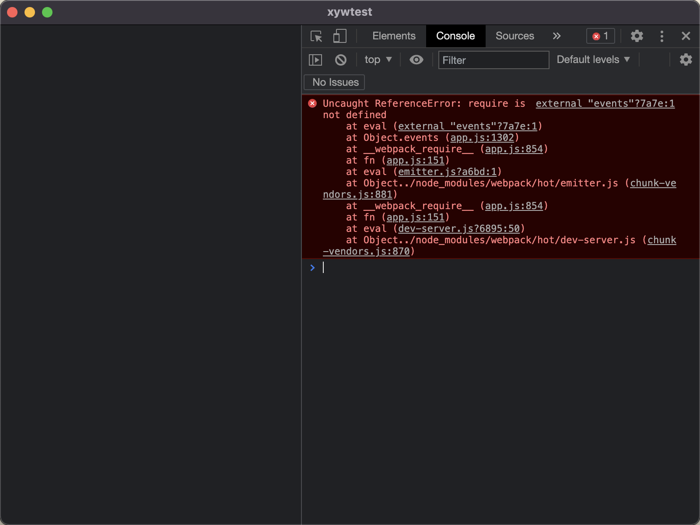

因为项目搭建是vue3.0版本才出的时候，那时vue3.0已经是正式版了，对于electron应用来说，不需要考虑浏览器兼容性，可以摒弃万恶的ie，所以我当时就毫无顾忌地上了3.0，项目框架搭建了一年有余，产品也迭代了十来个版本，还算稳定。
最近项目时间没那么紧了，也有新的项目需要搭建，考虑到script setup语法的香，也是跟进犹大脚步的时候了，我看vue3的更新日志，从3.0到3.2还修改了很多，我们项目也是时候升级到3.2了。
1、vue版本的升级
首先我们把vue和compiler-sfc同时升级到3.2版本。
1
2
|
yarn upgrade vue@^3.2.0
yarn upgrade @vue/compiler-sfc@^3.2.0
|
把组件改成setup script写法
1
2
3
4
5
6
7
8
9
10
11
12
13
14
15
16
17
|
<template>
<div class="home">
<img alt="Vue logo" src="../assets/logo.png">
<HelloWorld msg="Welcome to Your Vue.js + TypeScript App"/>
</div>
</template>
<script setup lang="ts">
import { onMounted } from 'vue'
import axios from 'axios'
import HelloWorld from '@/components/HelloWorld.vue' // @ is an alias to /src
onMounted(() => {
axios.get('http://open.home.komect.com/jssdk/doc/andlink.html').then(res => {
console.log(res)
})
})
</script>
|
启动项目
一切看起来非常顺利
2、elelctron的升级
1
|
yarn upgrade electron@^13.0.0
|
终于出现一点问题了

报错提示require is not defined
查看electron的文档，从9到13之间的变化，其中一个就是上下文隔离变成了默认开启，我们把它关掉试试。
1
2
3
4
5
6
7
8
9
10
11
12
|
const win = new BrowserWindow({
width: 800,
height: 600,
webPreferences: {
// Use pluginOptions.nodeIntegration, leave this alone
// See nklayman.github.io/vue-cli-plugin-electron-builder/guide/security.html#node-integration for more info
nodeIntegration: (process.env
.ELECTRON_NODE_INTEGRATION as unknown) as boolean,
webSecurity: false,
contextIsolation: false
}
})
|
关闭后一切正常